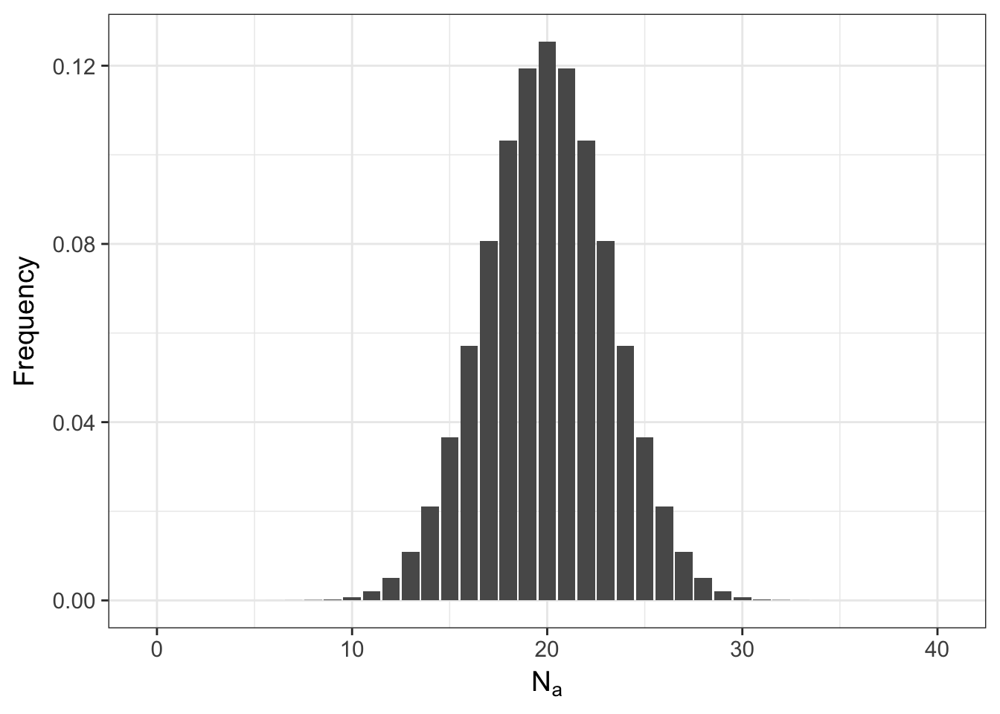
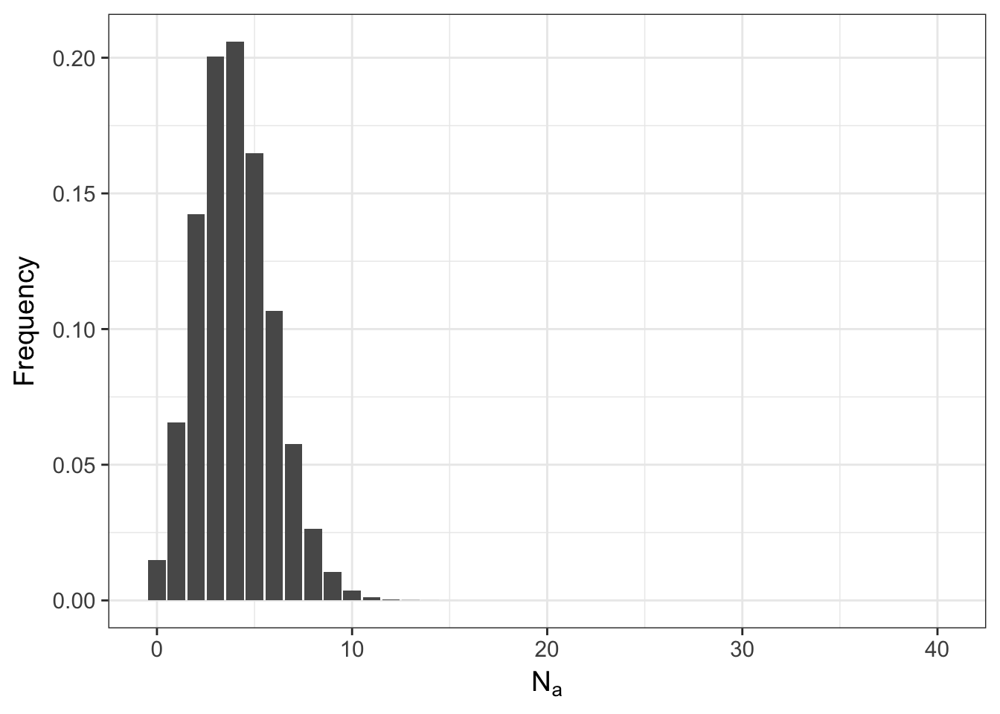
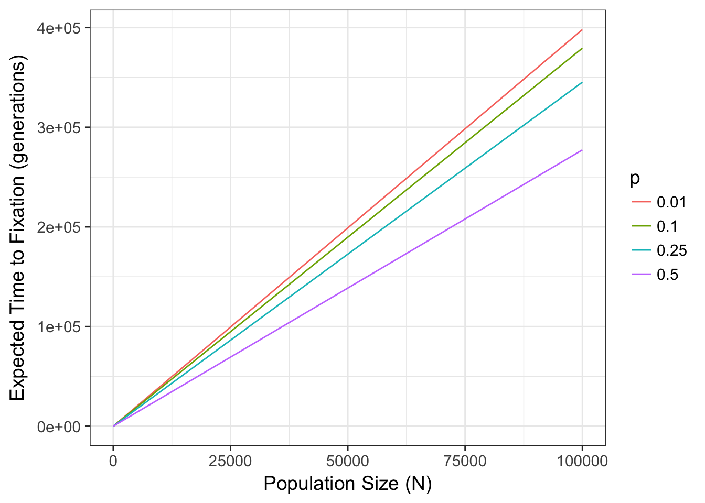

8 Genetic Drift

Genetic drift is the stochastic process resulting from a reduction in the size of a population. If populations are infinite in size, both allele and genotype frequencies should remain constant through time. However, if populations are not infinite (reality knocking), then drift may act as a diversifying force. This chapter examines the process of drift how we can measure its consequences.
Genetic drift is the process by which random selections of gametes produced during mating events result in stochastic changes in allele frequencies through time. This is not a terribly ground shattering idea, and our understanding of random chance provides some great insights into the underlying mechanisms operating in populations.
As an analogy, consider the simulation scenario where we have two alleles, \(A\) and \(B\), at a haploid locus (for simplicity).
Alleles <- c("A","B")Collections are drawn at random using different sample sizes
sample_size <- c(5,10,20,50,100)We are implicitly assuming that the frequencies of these two alleles are identical (e.g., \(p_A = p_B = 0.5\)). We can see the effects of genetic drift by running this ‘simulation’ in which populations are randomly created selected and used to estimate the frequency of an allele and how sample size influences the stability of the allele frequency. If N does not influence the estimation of allele frequencies then all examples should yield an estimated allele frequency equal to \(0.5\) (as they truly are).
To do this, we set up the parameters in a data.frame
df <- data.frame( N = rep( sample_size, each=50 ),FreqA = NA)and then go through data frame, each row in order, and pull out random collections from Alleles in sizes equal to sample_size. To do this, I’m going to use a for() loop. This is simply a function that repeats a set of code a specified number of times. In this case, I will need to take the first row, make a random sample of alleles given the value of df\$N[1], find the frequency of an allele in that random sample, and then store the frequency back into the data.frame at df$FreqA[1]. I then need to go to the second row and do the same thing again. And then the third row. Then the fourth. etc.
The format of a for() loop is pretty easy. You define a sequence of values to use (in this case I will use the variable named row to contain the sequence of integers from 1:nrow(df)). Each time row is assigned a value, the code within the curly brackets ‘{}’ after the for() statement is executed and the value of row is constant during that iteration.
for( row in 1:nrow(df) ) {
# make random selection from Alleles with replacement of a particular size
a <- sample( Alleles, size=df$N[row],replace = T)
# find the frequency
f <- sum( a == "A" ) / length(a)
# assign it back to the data.frame
df$FreqA[row] <- f
}Here, row starts out at 1, then the code inside the brackets is run with row=1. After it reaches the end of the loop, row is incremented by one and the code is then run with row=2. This is repeated until row = nrow(df) and then the looping is finished. If you type this in and do it, you have done your first stochastic (some would call it Monte Carlo) simulation! Congratulations. That wasn’t so hard.
Lets now look at the data.
summary(df)## N FreqA
## Min. : 5 Min. :0.0000
## 1st Qu.: 10 1st Qu.:0.4000
## Median : 20 Median :0.5000
## Mean : 37 Mean :0.5013
## 3rd Qu.: 50 3rd Qu.:0.5800
## Max. :100 Max. :1.0000The frequencies observed in each run are all over the place, basically covering the entire allowable range for an allele frequency. More importantly though lets look graphically at the allele frequencies using a boxplot where frequencies are grouped by sample size, df$N.
library(ggplot2)
p <- ggplot(df, aes(x=factor(N), y=FreqA)) + geom_boxplot()
p + xlab("Population Size") + ylab("Estimated Allele Frequency")(#fig:drift_simulation)Allele frequencies estimated from random selections of alleles under varying sample sizes.
The plot of these data show an asymptotic reduction in the variation around the estimated allele frequency as you increase N.
This is to be expected, as we sample more individuals, we will become more confident that the parameters we estimate are closer to the real value. In statistics, this is the law of large numbers or the Central Limit Theorem. It is the same thing here. If there is a small population, each mating event may have the opportunity to have a wide fluctuation in gamete allele frequencies. All other things being equal, the frequencies will change each generation, an amount inversely proportional to the size of the population.
Small populations are not rare, some organisms exist only at small densities (e.g., top predators). Others may have undergone population bottlenecks, exist in marginal habitats at the edge of their tolerance range, or have a life-history that goes through periodic outbreaks.
Algebraically, we can determine the probability of observing a specific number of alleles in the next generation given random mating assumptions and a small sample size. The selection of diploid alleles follows a binomial expansion.
\[ P(N_A|N,p_A) = \frac{2N!}{N_A!(2N-N_A)!}p_A^{N_A}(1-p_A)^{2N-N_A} \]
This expansion has two parts:
The binomial coefficient, \(\frac{2N!}{N_A!(2N-N_A)!}\), that determines the number of different ways we can get two alleles by random draw and have \(N_A\) samples of the \(A\) allele.
The probability, \(p_A^{N_A}(1-p_A)^{2N-N_A}\), of observing any each occurrence of the those samples based upon the frequency of the \(A\) allele, \(p_A\), in the population.
As an example, consider the idealized situation where we have \(N=20\) individuals, all of which are heterozygotes. That means that for a diploid locus, \(N_A = N_B = 20\). The probability of observing exactly 20 \(A\) alleles in the next generation can be calculated as:
p <- 0.5
N <- 20
N.A <- 20where the binomial coefficient is given by
coef <- factorial(2*N)/ (factorial(N.A)*factorial(2*N - N.A))
coef## [1] 137846528820and the probability of each one of those is
prob <- p^N.A * (1 - p)^(2*N-N.A)
prob## [1] 9.094947e-13and the final probability associated with observing \(N_A=20\) after a single round of random mating is
Prob.20.A <- coef*prob
Prob.20.A## [1] 0.1253707Which is not so good, if you are interested in stability of allele frequencies. Only 12.5370688% of the time would the allele frequency stay the same and 87.4629312% of the time allele frequencies would change. This change is not so much an evolutionary forces as it is a stochastic process associated with low sample sizes.
So if it is not that likely that the allele frequencies will stay the same, what does the entire distribution of expected allele occurrences look like? Lets set the variable N.A equal to a sequence of potential allele counts (from 0 to 2*N) and then estimate and plot the distribution.
N.A <- 0:(2*N)
Frequency <- factorial(2*N)/( factorial(N.A)*factorial(2*N-N.A)) * p^N.A * (1-p)^(2*N-N.A)
df <- data.frame(N.A,Frequency)
ggplot(df,aes(x=N.A,y=Frequency)) + geom_bar(stat="identity") + xlab(expression(N[a]))
Even for the tails of this distribution, the probabilities are not zero (here are the first 10 entries)
df[1:10,]## N.A Frequency
## 1 0 9.094947e-13
## 2 1 3.637979e-11
## 3 2 7.094059e-10
## 4 3 8.985808e-09
## 5 4 8.311872e-08
## 6 5 5.984548e-07
## 7 6 3.490986e-06
## 8 7 1.695622e-05
## 9 8 6.994440e-05
## 10 9 2.486912e-04meaning that it is possible to start with everyone as a heterozygote and after a single random mating event, the population may either be fixed for the \(A\) allele or have lost it altogether and only have aa homozygotes. The shape of this distribution is not only influenced by \(N\) but also by \(p\). Here is what it looks like if the frequency of the allele is \(0.10\) instead of \(0.50\).
p <- 0.1
Frequency <- factorial(2*N)/( factorial(N.A)*factorial(2*N-N.A)) * p^N.A * (1-p)^(2*N-N.A)
df <- data.frame(N.A,Frequency)
ggplot(df,aes(x=N.A,y=Frequency)) + geom_bar(stat="identity") + xlab(expression(N[a])) 
8.1 Consequences of Genetic Drift
The more skewed the allele frequency is away from \(0.5\), the more likely the population will be to become fixed for one allele or the other.
8.1.1 Time to Fixation
In fact, there is a well known relationship between the probability of fixation and the combination of both allele frequency and population size. Namely, the expected time to fixation, tfix (in generations), for a population of size Ne with two alleles (occurring p and q) is:
\[ t_{fix} = \frac{-4N_e(1-p)\log{(1-p})}{p} \]
which for values of \(N\) for \(p=c(0.01, 0.1, 0.25, 0.5)\) are

This parameter Ne can be quite deviant from the census size \(N\) depending upon several features of the organisms life history. We return to that later and discuss it in depth, for the time being, lets just assume it is a measure of the size of a population. That said, the stochastic selection of alleles due only to population size, can have significant effects on allele frequencies, available genetic diversity, and genotypic composition. In this simple two-allele system (often referred to as the Wright-Fisher model), if drift is the only feature that is influencing allele and genotype frequencies, the variance in allele frequencies through time has an expectation of:
\[ \sigma^2_p = pq\left[ 1-exp\left(-\frac{t}{2N_e}\right)\right] \]
which if examined for changes in Ne for fixed p=0.5
Figure 8.1: Expected variance in allele frequencies through time for a Wright-Fisher model of genetic drift for three different effective population sizes.
or changes in p for fixed Ne = 100 are
df <- data.frame( Generation=c(t,t,t),
sigma_p= c( ne(t,100,.1,.9), ne(t,100,.25,.75), ne(t,100,.5,.5) ),
p=rep(c("p=0.10","p=0.25","p=0.50"), each=100) )
ggplot( df, aes(x=Generation, y=sigma_p, color=p)) + geom_line() +
xlab("Generation (t)") + ylab(expression(sigma[p]^2))Figure 8.2: Expected variance in allele frequencies through time for a 2-allele Wright-Fisher model of genetic drift across different starting allele frequencies.
The important distinction here between these two graphs are that:
- For different effective population sizes, the larger the population, the more stable the allele frequencies through time. For \(N_e = 1000\), the variance in allele frequencies is relatively small, compared to the other population sizes, even after 100 generations.
- Allele frequencies show the opposite effect, with low allele frequencies, the variance is less than that in populations with larger allele frequencies (maximizing when \(p = \frac{1}{\ell}\), where \(\ell\) is the number of alleles). There is more genetic variance with a more even distribution of allele frequencies (something we will return to when we talk about Fishers Fundamental Theorem).
8.1.2 Time to Allele Loss
Time to fixation relates to the loss of all alleles, though in the data we often deal with, there is not a simple \(p=q\), two allele system. However, the models developed thus far, can give us an idea of the expected time to allele loss by rearranging the expectations a bit.
\[ t_{loss} = -\ln(p)\frac{4N_ep}{(1-p)} \]
8.2 Mutation & Drift
If mutation is also a factor, then the time to allele loss, tloss, is modified a bit. We will come back to discussions of mutation in a later chapter and get a bit more in-depth to its consequences. However, depending upon the mutation model, its effects are generally that it increases the rate of allele loss rather than decrease it. This is because a random mutation (in a system where there are more than two alleles) is more likely to make allele A become something else than make one of the potential large number of other alleles into an A.
With a non-zero mutation rate, \(\mu\), the time to loss is approximated to be
\[ t_{loss} = \frac{1}{\mu} \]
if and only if \(N_e\mu\) is very small (e.g., << 1). However, if it is larger than that, the expectation can be approximated as:
\[ t_{loss} = \frac{\ln(N_e\mu) + \gamma}{\mu} \]
where the \(\gamma\) term is Euler’s constant (Masel et al. 2007).
Your ability to use the binomial expansion to solve this kind of problem relies upon the sample size, which becomes rather large rather quickly. In fact, R cannot estimate the value over 171!